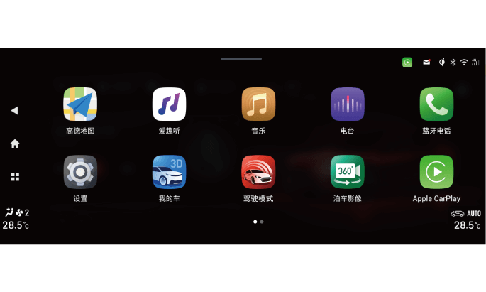

2.整车电源在“ON”挡位时，通过点击桌面左侧系统导航栏的菜单键 进入系统详细应用菜单界面，点击“泊车影像”软开关开启。
进入系统详细应用菜单界面，点击“泊车影像”软开关开启。
5.5.3 全景泊车系统*
全景泊车系统通过采集车辆前、后、左、右四个方向的图像，并将其拼接为车辆周围360°环境鸟瞰图，通过音响系统显示屏显示，为驾驶员提供车辆周边环境信息，减少行车盲区。还可结合方向盘转角和车辆尺寸等参数预测车辆运动轨迹，将其叠加于全景影像中，让驾驶员充分了解车辆行进方向，判断倒车是否安全。
开启和关闭
1. 通过换挡杆开启和关闭，整车电源在“ON”挡位时：
– 挡位切换至“R”挡时，系统自动开启。
– 挡位切换出“R”挡，且驾驶员无相关操作时，系统会显示30s后自动退出。

3. 通过方向盘自定义按键开启和关闭：
中控屏幕自定义按键设置为全景泊车功能后，整车电源在“ON”挡位时，短按自定义 按键，开启全景泊车系统。
按键，开启全景泊车系统。
界面说明

① 退出按键
② 当前视角
③ 拼接图显示区
④ 文字提示弹窗
⑤ 动态轨迹线
⑥ 单视图显示区
⑦ 设置按键
⑧ 2D/3D视图切换按键
⑨ 雷达提示音开关

2D视图界面：
–触摸拼接图显示区域③车辆的前、后、左、右区域，单视图显示区⑥会切换显示前、后、左、右单视图界面。
–点击3D按键切换至360全景+3D模拟模式。
全景泊车系统设置

短按设置按键⑦，进入全景泊车设置界面，可对以下选项进行设置。
–轨迹线开关：开启后，显示界面会显示动态轨迹线，随着方向盘的转动而转动。
–P挡退出：设置挡位挂出P挡时显示界面退出的时间。
–雷达激活全景：开启后，倒车雷达工作时即可激活全景影像功能。
–转向灯激活全景：开启后，开启转向灯或应急灯时即可激活全景影像功能。
摄像头分布

前摄像头安装在前车标下方。

左/右摄像头分别安装在左/右侧外后视镜底部。

后视摄像头安装在牌照灯旁。
行车记录功能

该系统带有行车记录功能，插入TF卡后行车记录功能中的录制、相册、设置功能可以操作，通过采集车辆前、后、左、右四个方向的视频并进行处理合成，在音响系统显示屏上进行显示及回放，记录的视频信息储存于全景泊车ECU的TF卡中。
通过点击音响主机应用菜单界面的“行车记录”软按键，进入行车记录功能主界面。
–插入TF卡后，行车记录仪默认进入录制状态，音响主机状态栏 图标提示当前的录制状态。
1. 拍照
–拍照：点击软按键①拍照记录当前环视图片，并保存到TF卡中。
2. 相册
–点击软按键②进入相册菜单界面。
–通过相册菜单界面可以选择对记录的视频及图像进行单独显示回放。也可以选择对视频或图像文件进行锁定或删除。
3. 设置
–点击软按键③进入设置菜单界面。
–通过设置菜单可以对视频录制状态和时间进行设置。同时，也可以通过格式化软按键对TF卡进行格式化。
行车记录TF卡安装位置

全景泊车ECU及TF卡安装在主驾驶座椅下面。
– 掀开地毯上的魔术贴即可看见。
— 页面到底了 —